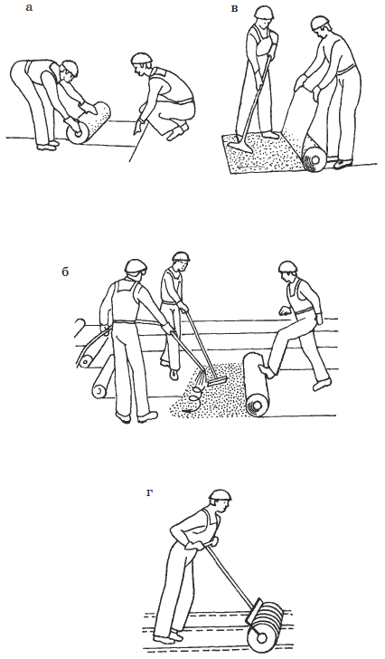
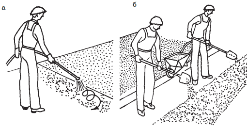
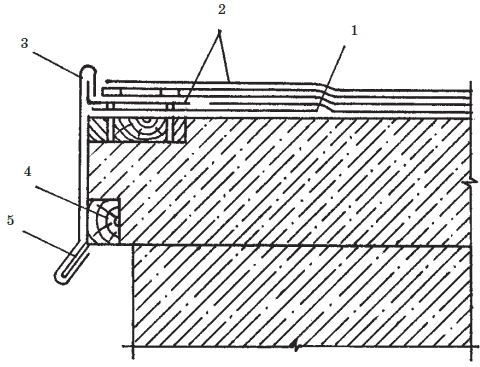
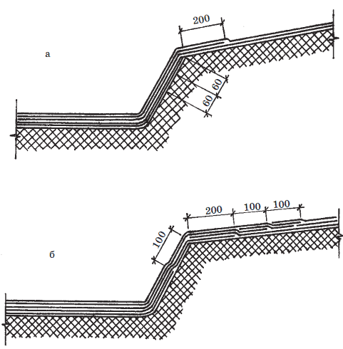
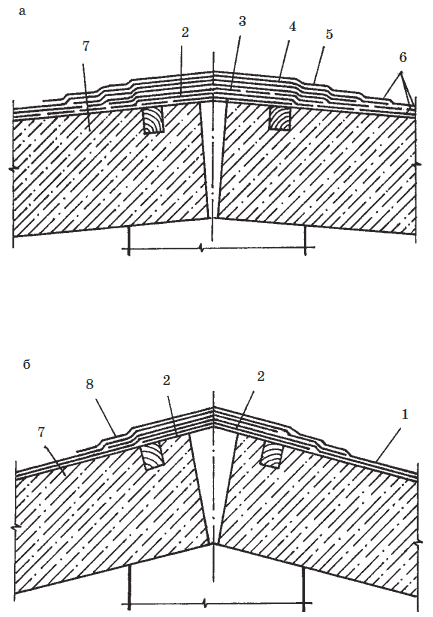
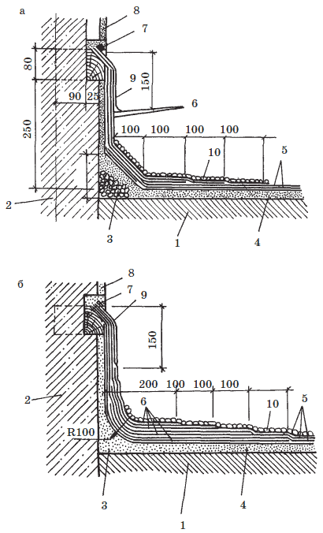
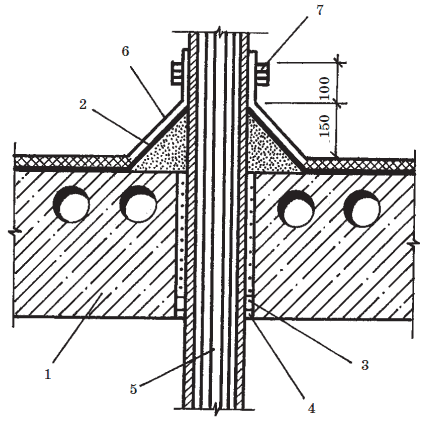

Рулонная кровля.

Мягкая рулонная кровля устраивается в зависимости от уклона скатов в несколько слоев:
• при уклоне более 15 % – в 2 слоя;
• при уклоне 5-15 % – в 3 слоя;
• при уклоне 0–5 % – в 4 слоя.
Максимальный уклон скатов крыши под рулонные материалы не должен превышать 25 %. В основном мягкая рулонная кровля устраивается на плоских или пологих скатах, где нельзя использовать другие кровельные материалы.
Совет
Подготовительными процессами при устройстве кровель из рулонных материалов является подготовка и приготовление грунтовок, мастик и рулонных материалов к наклейке. Начинают с подготовки основания под пароизоляцию, включая устройство опор под воронки внутреннего водостока. Затем на крышу подают мастику. Если для пароизоляции используют пергамин, его наклеивают по мастике.
Для наклейки рулонных материалов к основанию используют холодные и горячие мастики. Холодную битумную мастику перед укладкой на основание расплавляют до температуры 150–160 °C. Для приготовления горячих мастик битум расплавляют до температуры 220 °C, затем вводят порошкообразные минеральные наполнители, например, тальк, диатомит, трепел.
Перед укладкой на основание должен быть подготовлен кровельный материал. Для этого он должен быть раскатан с одновременной очисткой поверхности от посыпок и выдержан в течение 24 часов.
Внимание!
Материалы, не имеющие покровного слоя, перематывают на другую сторону. Если рубероид предстоит укладывать по холодной мастике, очищать его от посыпки не надо, так как она поглощается мастикой, становясь ее наполнителем.
Наклейка полотнищ рулонных материалов. Для склеивания полотнищ рулонного материала используются родственные мастики. Слои рулонных кровельных материалов, приготовленных на битумной основе, приклеивают битумными мастиками, а толь – дегтевыми составами.
При наклейке полотнищ необходимо учитывать величину уклона крыши, направление стока воды, направление господствующих ветров и температуру воздуха. Полотна на крышах с уклоном до 15 % наклеивают в направлении от нижних мест к повышенным с расположением их перпендикулярно стоку воды. На крышах с уклоном более 15 % полотна наклеивают от повышенных мест к пониженным в направлении стока воды, чтобы рулонный ковер не сползал.
Стелятся рулонные полотнища на скатах внахлестку: каждый последующий слой должен перекрывать стык элементов нижнего. При уклоне крыши более 5 % ширина нахлестки должна быть 70 мм во внутренних слоях ковра и 100 мм – в наружных. При уклонах менее 5 % ширина нахлестки во всех слоях не должна быть меньше 100 мм. При этом нахлестки в смежных слоях не должны располагаться одна над другой, а должны быть удалены друг от друга на половину ширины рулона, т. е, примерно на 50 мм. Все рулонные полосы должны укладываться в одном направлении. На плоских и пологих крышах (с уклоном до 15 %) полотнища рулонного ковра приклеиваются механизированным способом, при помощи специальной наклеечной машины.
Для наклейки рулонных материалов вручную необходимо звено из двух человек: «укладчика» и «щеточника». Щеточник наносит мастику на основание и внутреннюю поверхность рулона, а укладчик подгоняет и приклеивает полотнища к огрунтованному основанию. Работа выполняется в такой последовательности: укладчик примеряет часть полотнища длиной 3–6 м к конкретному участку ската, после чего отворачивает его небольшой участок – на левую сторону на 0,5–0,7 м. Щеточник быстро наносит щеткой горячую мастику (или гребком – холодную мастику) на основание и на отвернутый конец рулона сначала сплошными линиями края, затем середину слоем не более 1–2 мм. После этого укладчик склеивает смазанные поверхности, тщательно разглаживая полотнища руками по направлению от середины к краям. На руках укладчика обязательно должны быть брезентовые рукавицы. Затем укладчик переходит на приклеенный участок и операция повторяется каждый раз небольшими участками по 0,5–0,7 м в направлении раскатки рулона. В завершение наклеенное полотнище после пришпатлевки кромок шпателем прокатывается катком ( рис. 25). Следующие полотнища наклеиваются аналогично.

Рис. 25. Рулонная кровля. Укладка кровельного ковра: а – раскатка и примерка рулона; б – приклеивание конца полотнища с подачей мастики удочкой и разравниванием ее гребком; в – раскатывание полотнища; г – прикатывание полотнища катком
Качество приклеивания рулонных материалов оценивают, медленно отрывая один слой ковра от другого: разрыв допускается по мастике или рулонному материалу.
Если во время наклейки полотнище отклонилось немного в сторону, то его можно попытаться сдвинуть не отклеивая. Если это не получается, необходимо отрезать приклеенную часть полотнища и наклеить ее правильно с нахлестом в 100 мм.
Вздутия, образовавшиеся по ходу наклейки, прокалывают шилом или прорезают, а затем крепко прижимают к основанию, пока из отверстия не потечет мастика.
Укладывают рулонные полотнища послойно, причем, при использовании холодных мастик интервал между наклейкой каждого слоя должен быть не менее 12 часов.
Наружную поверхность битумного кровельного ковра покрывают мастикой слоем 3–5 мм при ширине полосы от 1 до 1,5 м, затем рассеивают и втапливают в нее мелкий горячий гравий (размером 3–6 мм), получая таким образом защитный слой из гравия ( рис. 26). Битумно-полимерные рулонные ковры имеют внешний защитный слой, а полимерные ковры иногда покрывают лаковым слоем специальной мастики.

Рис. 26. Устройство гравийного защитного слоя: а – нанесение мастики на поверхность кровли; б – рассеивание с помощью лопат гравия по слою мастики
Внимание!
Наклейка рулонного ковра является весьма трудоемкой операцией, требующей больших затрат ручного труда. В последнее время созданы машины для механизации кровельных работ, о чем будет рассказано отдельно, т. к. применение такого оборудования целесообразно только на крупных объектах при больших объемах работ по устройству мягких кровель или в специализированных строительных организациях или фирмах.
Для лучшего приклеивания рулонных материалов с их поверхности удаляют посыпку и выправляют полотнища путем перемотки рулонов на обратную сторону.
Посыпка легче удаляется, если поверхность полотнища обработать растворителем: рубероид – соляровым маслом, а толь-антраценовым маслом. С размягченного слоя крупную посыпку очищают шпателем или стальной щеткой. Лицевую сторону полотнища, предназначенную для верхнего слоя покрытия, обрабатывают только частично, снимая посыпку с края полосы (на ширину 100 мм). Это необходимо для склеивания краев полотнищ, уложенных внахлестку.
Мелкая посыпка при попадании на нее растворителя поглощается покровным слоем, придавая ему необходимую эластичность. После этого остается только просушить полотнища.
Покрытие карнизных и фронтонных свесовСовет
Элементы крыши покрываются в различной последовательности: иногда одновременно с обклейкой скатов, иногда вначале (до скатов), а иногда и после устройства основного покрытия. В устройстве рулонной кровли на различных элементах крыши полотнища соединяются либо в вилку, либо внахлест.
После устройства карнизных блоков по карнизу дома укладывается переходной деревянный брус, который сверху закрывают листами кровельной стали. Одновременно к карнизу крепят лотковые скобы, на которые укладывают желоба, крепящиеся к скобам заклейками. Сливную полосу карниза также покрывают стальными листами. Таким образом карнизный свес подготовлен к обклейке рулонными материалами.
Вдоль фронтонного свеса приклеивают дополнительное полотнище, на которое укладывают рулонные полосы. Кроме того, к свесу крепят кляммеры, за которые крепится фартук из кровельной стали ( рис. 27).

Рис. 27. Рулонные кровли. Покрытие фронтонного свеса: 1 – дополнительное рулонное покрытие; 2 – рулонный ковер; 3 – фартук из кровельной стали; 4 – рейка; 5 – кляммер
Покрытие ендов и разжелобковТак как разжелобки и ендовы имеют наименьший уклон, то их покрывают в 4 или даже 5 слоев рулонного ковра, из которых три дополнительных слоя наклеиваются сразу же один за другим. Смежные полотнища в слое перекрывают друг друга на 100 мм (по направлению стока воды). Верхние слои наклеиваются чередуясь со скатными полотнищами.
Совет
Если примыкающий скат имеет уклон более 15 %, то в разжелобке три слоя наклеивают один за другим, сопряженные в вилку на откосе разжелобка. Если уклон примыкающего ската менее 15 %, то слои сопрягаются на самом скате ( рис. 28).

Рис. 28. Рулонные кровли. Покрытие ендов и разжелобков: а, б – ендовы и разжелобки с соединением дополнительных слоев на откосе и на скате
Узкие ендовы, до 600 мм шириной, обклеивают длинными кусками, а широкие (более 600 мм) – кусками произвольной длины, уложенными поперек ендовы.
Наносят мастику и ведут наклейку полотнищ по направлению от водоприемной воронки к водоразделу.
Покрытие конька крышиКонек крыши с уклоном менее 15 % оклеивают полотнищами, уложенными перпендикулярно стоку воды; конец крыши с уклоном более 15 % – параллельно стоку.
При первом способе покрытия конька ( рис. 29а) нижний слой рулонного ковра составляют наклеенные встык на коньке два полотнища 6. Второй слой – внутреннее коньковое полотнище 3 шириной 400 мм. Третий слой – вновь два полотнища 6, приклеенные встык. Четвертый слой – второе коньковое полотнище 4 шириной 500 мм. Пятый слой – два наружных рулонных полотнища 6, уложенные встык. Последний слой – верхнее коньковое полотнище 5 шириной 600 мм.
При втором способе покрытия конька все внутренние и наружные слои наклеиваются перпендикулярно коньку с перепусканием каждого через конек на 200 мм (во внутренних слоях) и на 250 мм в наружных слоях ( рис. 29б).

Рис. 29. Рулонные кровли. Покрытие конька крыши: а – при уклоне до 15 %; б – при уклоне более 15 %: 1 – рулонный ковер; 2 – фартук из кровельной стали; 3 – первое внутреннее коньковое полотнище; 4 – второе внутреннее коньковое полотнище; 5 – верхнее коньковое полотнище; 6 – полотнища у конька; 7 – жесткий утеплитель; 8 – перепускаемый конец рулонного ковра
Примыкание рулонного ковра к вертикальным стенам выполняется двумя способами:
Внахлестку (рис. 30). Рулонные полотнища наклеивают таким образом, чтобы они заканчивались на переходной наклонной плоскости 3. Сверху на готовый кровельный ковер 5 и вертикальную стену 2 наклеивают «полотнища примыкания» 6. Концы «полотнищ примыкания» крепятся толевыми гвоздями к заранее укрепленной антисептированной деревянной рейке. Верхнюю часть полотнищ закрывают фартуком из кровельной стали 9.

Рис. 30. Примыкание рулонного ковра к вертикальным стенам с соединением полотнищ внахлестку и в вилку: а – соединение полотнищ внахлестку; б – соединение полотнищ в вилку: 1 – основание крыши; 2 – стена; 3 – переходная плоскость; 4 —слой бетона; 5 – рулонный ковер; 6 – полотнища примыкания; 7 – гвозди; 8 – деревянная рейка; 9 – металлический фартук
В вилку (рис. 30 б). Полотнища рулонного ковра 5 и «полотнища примыкания» 6 приклеиваются на основание крыши 1 и стены 2 поочередно. Верхние концы полотнищ также крепят гвоздями 7 к деревянной рейке 8 и закрывают металлическим фартуком 9.
И в том, и в другом случае перед наклейкой полотнища складывают пополам и изгибом укладывают вдоль линии примыкания. Мастику наносят сначала на одну отогнутую половину, а затем – на другую. Кромки полотнищ прошпаклевывают выдавленной с боков мастикой.
Сопряжения рулонного ковра с вытяжными канализационными стояками, телевизионными антеннами и другими трубами производят, устраивая наклонные бортики вокруг трубы или стойки. В этом случае верхний край ковра прикрывают металлическим фартуком, который крепят к трубе стяжным хомутом ( рис. 31).

Рис. 31. Сопряжение рулонного ковра с вытяжными стояками и трубами: 1 – несущая панель; 2 – кровельное покрытие; 3 – заделка раствором; 4 – паропроницаемый слой; 5 – стойка; 6 – металлический фартук; 7 – стоячий хомут